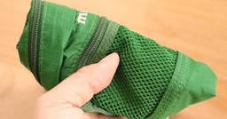
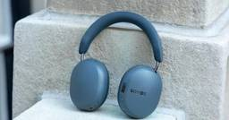
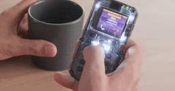
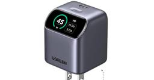
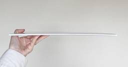
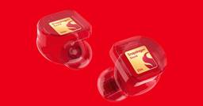

ギズモード・ジャパン
https://www.gizmodo.jp
日本最大のテクノロジー＆ガジェット専門メディア。YouTubeや記事を通じて、最新ガジェットの偏愛レビューから、AI／サイエンスの深掘りコンテンツまで幅広く発信しています。「みんなで探求する」を合言葉に、刺激的な未来の体験をシェアします。
フィード
健康のために金属探知機を持って散歩してたら金を発見したラッキーガイ
ギズモード・ジャパン
ノルウェー南部のレンネソイ島で金属探知機持参で散歩していた男性が、紀元前に作られた金のペンダントを発見。
3時間前

バッグの中の頼れるやつ。モンベルの最強ポーチ
ギズモード・ジャパン
アウトドアブランドの雄とも言えるモンベル。数々のプロダクトの中には普段も使えるだけではなく、守護神のように心強い存在でもあります。そこで、バッグの中で活躍するモンベルのプロダクトを集めました。ホスピタリティ感じるうれしいディテールいろんなポ…
3時間前
ホンダ、二輪の虎を産む。オニツカタイガーバイクよ風を切れ
ギズモード・ジャパン
ホンダとオニツカタイガーがコラボした新型バイクのコンセプトモデル「Onitsuka Tiger Honda Mid Sports Concept」のデザインや魅力を紹介します。
4時間前
日本人も気になるよね、Googlebook。Lenovoの15インチは国内発売されるかも
ギズモード・ジャパン
日本未発売と言われるGooglebookですが、Lenovoの15インチモデルに日本向けの型番を発見！気になるスペックや発売の可能性を詳しく解説します。
5時間前

「Sonos Ace Ultra」レビュー。筋金入りのSonosファンならこのヘッドホンを愛せるはず
ギズモード・ジャパン
ワイヤレススピーカー「Sonos Play」を皮切りに、本格的にハードウェア市場へ復帰したSonos（ソノス）。新たにワイヤレスヘッドホン「Sonos Ace Ultra」と、サウンドバー「Sonos Beam Ultra」が登場しました。…
7時間前

iPhoneでコピー、Windowsにペースト。あのひと手間がついになくなるかも
ギズモード・ジャパン
iPhoneとWindows間で直接コピー＆ペーストが可能になる機能の動向を解説。EUの規制を背景に、面倒な手順なしでデータ転送できる未来を予測します。
7時間前
どハマり必至！ 大人も楽しい注目のおもちゃ
ギズモード・ジャパン
TOKYOおもちゃショー2026で注目を集めた、大人もハマる最新おもちゃを厳選紹介。グラヴィトラックスや小型ドリフトラジコン、AI搭載ボードゲームの魅力を徹底解説します。
8時間前

自分で組み立てるサイバー・ガラケー 2
2
ギズモード・ジャパン
自分で組み立ててAIでアプリも作れるレトロでサイバーな4G携帯電話「MAKERphone 2.0」の魅力をご紹介。電子工作好き必見の最新DIYデバイスです。
9時間前

高速充電＆いたわり充電＆見える化。「充電器の三冠王」はこちら
ギズモード・ジャパン
UGREENのディスプレイ付き45W充電器をレビュー。高速充電やいたわり充電に対応し、スマホのバッテリー寿命を守る充電器の三冠王の魅力を解説します。
11時間前
ゲームは快適、容量はやりくり。MSIのゲーミングノートは予算の配分がうまかった
ギズモード・ジャパン
MSIの低価格ゲーミングノートPC「Crosshair 16 HX E14W」をレビュー。メモリやSSDは控えめですが、240Hzディスプレイや優れた冷却性能、高いゲーム性能を備える高コスパモデルの魅力を解説します。
11時間前

紙のメモ帳、やめました。無印良品の「うすーいコレ」を導入して忘れ物が激減
ギズモード・ジャパン
紙のメモ帳をやめ、無印良品の折りたたみホワイトボードを導入して家族の忘れ物が激減した体験談。冷蔵庫に貼れるA3サイズで暮らしが快適になるコツを紹介。
11時間前
雨の日でも、夜でも発電。太陽光発電の弱点がなくなりつつある
ギズモード・ジャパン
雨の日や夜間、さらには海中でも発電可能に？最新の太陽光発電の驚くべき技術進化や次世代パネルの仕組みを分かりやすく解説します。
13時間前
キーボードの祭典で出逢った個性派キーボードたち【TOKYO KEYBOARD EXPO 2026】
ギズモード・ジャパン
日本最大級のキーボード祭典「TOKYO KEYBOARD EXPO 2026」で見つけた個性派キーボードを一挙紹介！最新の自作・分割キーボードの魅力をお届けします。
14時間前
スマホの画面保護フィルム、実はもういらない説 3
ギズモード・ジャパン
2024年3月8日の記事を編集して再掲載しています。スマートフォンを買い替えた時、一緒に買いがちなもの。ケース、ストラップホルダー、スマホリング、カードがはいるスリーブ、etc…。スマホの使い方によって手にするアクセサリはさまざまですが、中…
14時間前

イヤホンが家のWi-Fiにつながる時代へ。Qualcommの新チップ「Snapdragon Sound Elite Gen 2」
ギズモード・ジャパン
先日開催されたQualcommの発表会Snapdragon Summit。ハイスペックハイパフォーマンスな次世代チップが発表されましたが、そのなかでも普通の人の毎日に大きく影響しそうなチップが「Snapdragon Sound Elite …
15時間前
水筒に見えて、コンセントにつなぐと湯沸かし器。旅に連れ出せる450gのケトル 1
ギズモード・ジャパン
重さ約450gの水筒型ポータブルケトル。旅先でもオフィスでも、コンセントにつなげば約400mlのお湯が沸かせ、白湯モードや温度調節機能でいつでも温かい飲み物が楽しめます。
15時間前
君のiPhone大丈夫？ iPhone 18 Pro再起動問題、まもなく対策へ
ギズモード・ジャパン
その不具合、もうすぐ直りそうですよ。今iPhone 18 Proシリーズを買った人たちの間で問題にあがっているのが「Face ID失敗すると再起動するんだけど…」という現象。僕の手元のiPhone 18 Pro Maxでは起こらなかったので…
18時間前
手から糸を飛ばしたい。ヒーローの心をもった大人たちよ、今こそ「ZipString Aracna」で夢を叶えよ 1
ギズモード・ジャパン
手から糸を飛ばす憧れを実現！「ZipString Aracna」でヒーロー体験ができる大人の遊び道具をご紹介。
19時間前
表示しないと罰金6000円になるアレ、用意してる？ 秋の交通安全運動だから見直しを
ギズモード・ジャパン
2023年9月21日の記事を編集して再掲載しています。今年も「秋の交通安全運動」がやってきました。この時期はより一層、交通安全・安全運転について意識を高めたいところ。そんなときにぴったりのナゾナゾ（？）をひとつ。「車載義務はないけれど、表示…
1日前
スマートロックに締め出され、東京で朝までスマホも財布もなしでサバイバルした話 1
ギズモード・ジャパン
スマートロックで締め出され、スマホも財布もなく東京で17時間を過ごした実体験。IoT時代のサバイバルとデジタル依存の怖さを描いたエッセイ。
1日前